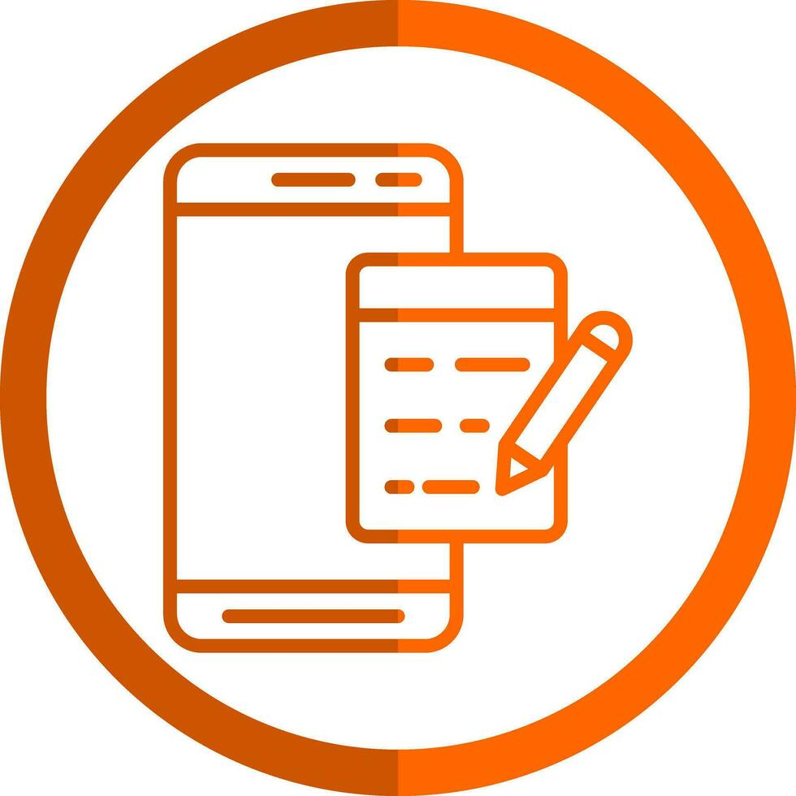
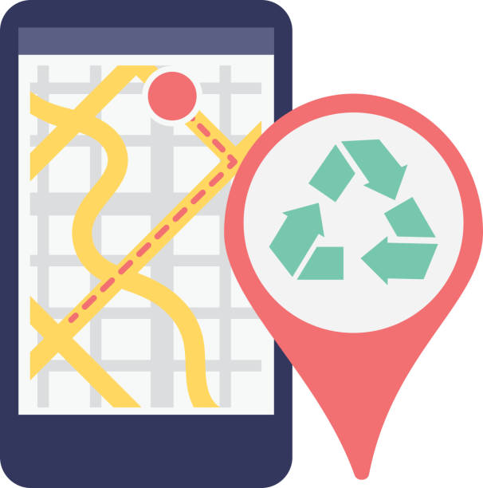

Sobre Nosotros
En **ReversaTech** creemos que cada dispositivo merece una segunda oportunidad.
Somos una **app mexicana** enfocada en la **logística inversa electrónica**, que facilita a las personas entregar celulares, computadoras, cargadores y otros aparatos en puntos ecológicos, escuelas o centros de acopio certificados.
Nuestra meta es **reducir la contaminación tecnológica**, fomentar el **reciclaje responsable** y conectar a las comunidades con empresas que gestionan adecuadamente los residuos electrónicos.
 Recolección a Domicilio
Pensamos en quienes no tienen tiempo o transporte. Con solo unos clics, puedes programar una visita para que nuestro equipo pase a recoger tus aparatos en casa, de forma segura y sin costo adicional.
 Entrega en Puntos Ecológicos
Sabemos que muchas personas prefieren llevar sus aparatos directamente a un Punto Ecológico, por eso nuestra app muestra un mapa con los centros de recolección más cercanos a tu ubicación. Cada punto está certificado para garantizar que tus dispositivos se manejen de forma responsable y ecológica.
Servicios

Certificado Verde Digital
Cada vez que entregas un aparato, recibirás un Certificado Verde, un comprobante digital que demuestra tu aporte al medio ambiente y te motiva a seguir reciclando.